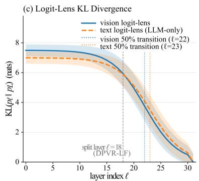

Late-Layer Fusion is Enough: Dual-Path Vision Token Routing for Multimodal Large Language Models under Visual Saturation Siyuan Liu, Jinyang Wu；机构信息未在 arXiv 元数据中列出。 arXiv 新增 原文链接
Figureure 1 · : Paper at a glanceFigure 1: Paper at a glance. Pareto plots over LLaVA-1.5-7B on six standard benchmarks. (a) Trainable parameters vs accuracy: DPVR-LF reaches the 6-bench accuracy band of 0.66 at a 3% trainable budget, on par with LoRA r=64 (80M) and the cited full fine-tuning of the 7B backbone. (b) Forward latency on A800 vs accuracy: DPVR-LF saves −28.0% measured latency (A800, ??=4) while retaining near-baseline accuracy, matching Table 6. The green band marks the near-vanilla accuracy zone $( y \in [ 0 . 6 5 5 , 0 . 6 7 0 ] )$ .这张图/表用于判断 Late-Layer Fusion is Enough 的实验收益来自哪里。重点看替换、消融或跨模型设置下趋势是否一致，而不是只看单个最高分。

Figureure 2 · : Visual saturation in MLLMsFigure 2: Visual saturation in MLLMs. (a) Adjacent-layer cosine similarity $\cos ( h _ { \ell } , h _ { \ell + 1 } )$ : vision tokens saturate $\geq 0 . 9 2$ from $L _ { 0 }$ onwards, while text tokens climb in deep layers. (b) Text-to-image attention mass: drops 10× in the first four layers and asymptotes to 0.04 after $L _ { 1 8 } .$ . (c) Logit-lens KL divergence to the final-layer distribution: the vision 50%-transition occurs at $L _ { 2 2 }$ , the text transition at $L _ { 2 3 }$ (LLM-only baseline). All curves: 500 LLaVA-665k samples, per-sample median with IQR band. The vertical dashed line at $\ell = 1 8$ marks the split layer used by DPVR-LF.这张可视化用来解释 Late-Layer Fusion is Enough 学到的中间表征或对齐关系。重点看它是否支持正文里的机制判断。